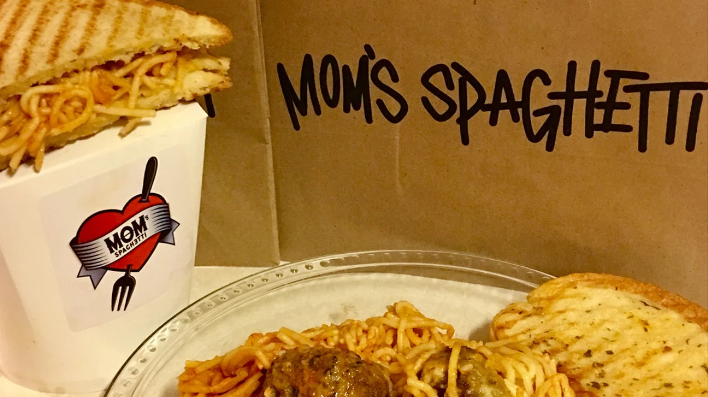

Mom's Spaghetti

Our number one classic recipe at the 8 Mile Cafe!
Grab a pen and paper, write down the required ingredients and enjoy yourself a meal that is guarenteed to make you vomit!
Ingredients
- 1 Pack of Spaghetti
- 1 Jar of Spaghetti Sauce
- A sweater
Steps
- Place you spaghetti in a pan and cover with water
- Bring the water to a boil, then simmer for 12-15 minutes
- Drainer the water from the pan
- Empty the jar of spaghetti sauce into the pan of spaghetti and mix thouroughly
- Heat for a further 5 minutes then allow to cool
- Enjoy your completed Mom's Spaghetti
- Dont forget to vomit on your sweater!
Return Home
We hope you all enjoy our famous recipes, please share this website so everyone can enjoy the taste of 8 Mile!